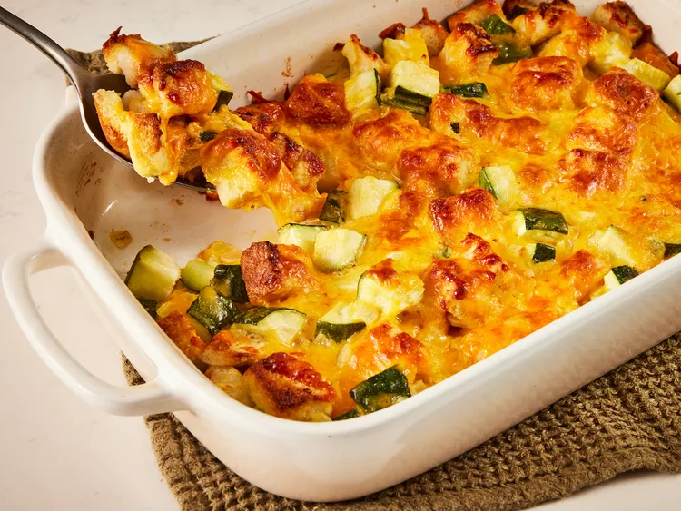

Home
Chicken

A fun chicken repice the children can help you prepare.They love crushing the crackers.It does not matter if the measurements are not perfect.
Just wing it.
Ingredients
- 30 Saltine crackers
- 2 tablespoons all-purpose flour
- 2 tablespoons dry potato flakes
- 1 teaspoon seasoned salt
- ½ teaspoon ground black pepper
- 1 egg
- 6 skinless, boneless chicken breast halves
- 2 cups vegetable oil for frying
Cheesy Zuchinni

This zucchini casserole with bread cubes, onion, and Cheddar is simple and easy to make for a deliciously cheesy vegetable side dish.
Ingredients
- 4 slices bread, cubed
- ¼ cup melted butter
- 2 cups cubed zucchini
- 1 large onion, finely chopped
- 1 large egg, beaten
- 1 teaspoon garlic salt or to taste
- 2 cups shredded Cheddar cheese
Tomato Soup and Grilled Cheese Casserole

This tomato soup and grilled cheese casserole tastes like the classic combo: Campbell's tomato soup with grilled cheese sandwiches.
The baked-in grilled cheese cubes are golden, melty, and delicious.
- 12 (½-inch thick) slices sourdough bread
- 1/4 cup butter, softened, divided
- 3 ounces cream cheese, softened
- 12 slices pre-sliced Cheddar cheese
- 2 (10.5 ounce) cans condensed tomato soup (such as Campbell's)
- 1 cup tomato juice
- 2 large eggs
- 1 teaspoon Italian seasoning
- 1/2 teaspoon garlic powder
- 1 Roma tomato, seeded and chopped into ½-inch pieces
- 1 cup shredded Italian blend or Cheddar cheese